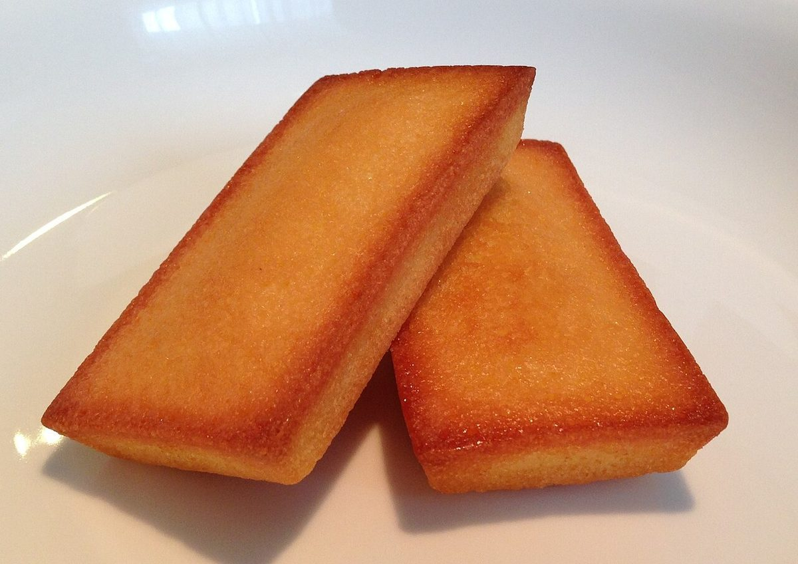
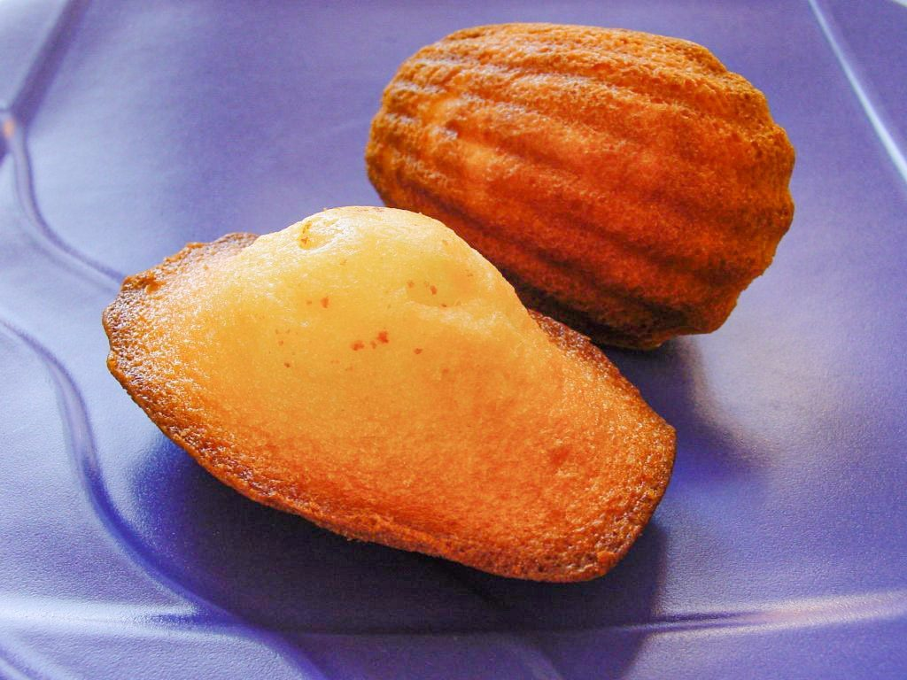
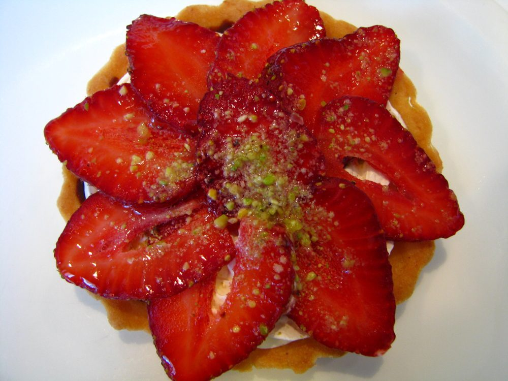
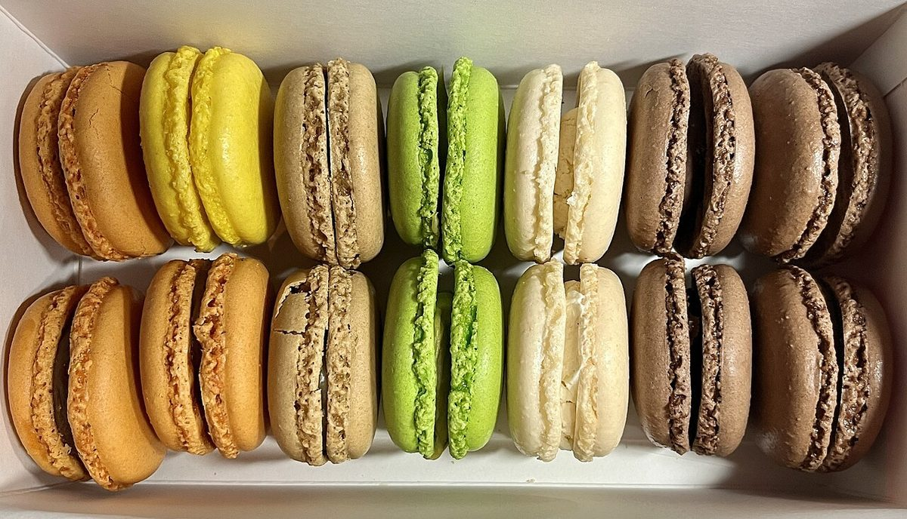
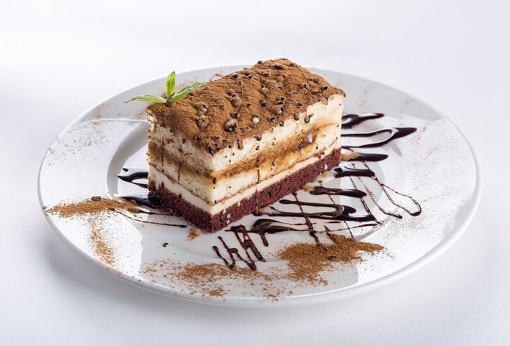

スコーン
プレーン、ココアチョコチップ、バジルチーズなどが紹介されています。
お店のこと
店名「HARU」の意味は確認できていません。このページの色や言葉づかいは、「春の日だまりのようにやさしい焼き色」という制作側のイメージです。


お菓子
取材記事などで紹介されている品です。その日の品ぞろえ・価格・営業時間は準備中です。最新情報はInstagramでご確認ください。写真はすべてイメージで、実際の商品ではありません。
プレーン、ココアチョコチップ、バジルチーズなどが紹介されています。

バニラ、アールグレイ、ココナツのディアマンが紹介されています(写真は近い焼き菓子のイメージ)。
発酵バターとラム酒のガレット・ブルトンヌ、ブール・ド・ネージュなど(写真はクッキーのイメージ)。

冷蔵の品として紹介されています(写真は別のチーズケーキのイメージ)。

シフォンケーキ、チーズパイなども紹介されています(写真は焼き菓子のイメージ)。

品ぞろえは日によって変わります。詳細は準備中です。



口コミ
制作側が作った例文で、実在のお客様の声ではありません。
手みやげに選びました。小さな袋に入っていて、渡しやすかったです。
30代・会社員(イメージ)
さくっとした食べ心地で、お茶の時間が楽しみになりました。
40代・主婦(イメージ)
Instagramで今日の焼き菓子を見てから寄れるのが助かります。
20代・学生(イメージ)
アクセス
| 住所 | 〒981-1227 宮城県名取市杜せきのした3丁目7-11 |
|---|---|
| 電話 | 準備中 |
| 営業時間 | 準備中(最新情報はInstagramで) |
| 定休日 | 準備中 |
| @bakeshop_haru |
掲載写真はフリー素材のイメージで、店舗の実際の様子・商品ではありません。国外や撮影地不明の写真を含み、縮小・切り抜きの加工をしています。